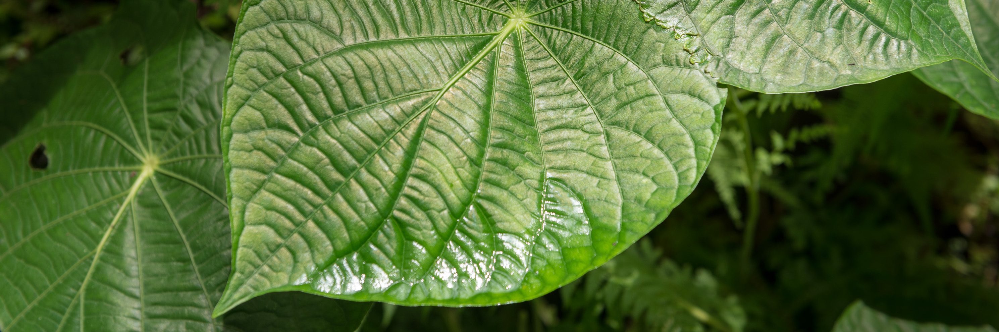
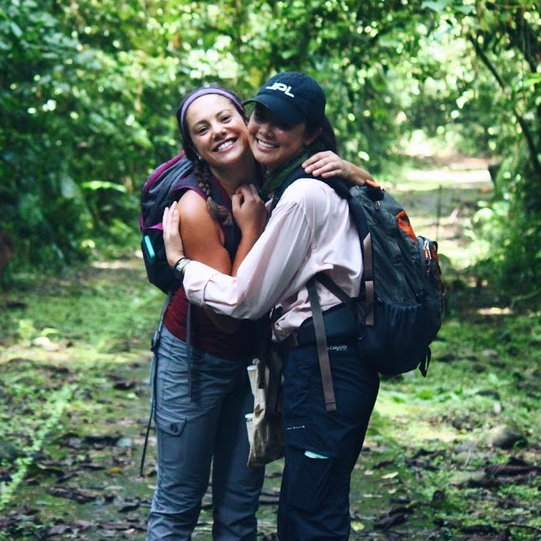

Madeline Gillman
Photo courtesy Marc Campos, Occidental College photographer

Madeline Gillman
Occidental College, 2018
Madeline is interested in how the distribution of Quercus lobata (valley oak) will shift with respect to climate change. To answer that question, she is creating species distribution models and using physiological variables to refine those models. She has also studied leaf hydraulics of a tropical tank bromeliad, Guzmania monostachia, in the North Lab.